treeio v1.35.0 Learn more at https://yulab-smu.top/contribution-tree-data/
Please cite:
LG Wang, TTY Lam, S Xu, Z Dai, L Zhou, T Feng, P Guo, CW Dunn, BR
Jones, T Bradley, H Zhu, Y Guan, Y Jiang, G Yu. treeio: an R package
for phylogenetic tree input and output with richly annotated and
associated data. Molecular Biology and Evolution. 2020, 37(2):599-603.
doi: 10.1093/molbev/msz240
source("software-link.R")
The ggtree mailing-list1 is a great place to get help, once you have created a reproducible example that illustrates your problem.
Installation
The ggtree is released within the Bioconductor project; you need to use BiocManager to install it.
## you need to install BiocManager before using it## install.packages("BiocManager")library(BiocManager)install("ggtree")
Bioconductor release is adhered to a specific R version. Please make sure you are using the latest version of R if you want to install the latest release of Bioconductor packages, including ggtree. Beware that bugs will only be fixed in the current release and develop branches. If you find a bug, please follow the guide2 to report it.
To make it easy to install and load multiple core packages in a single step, we created a meta-package, treedataverse. Users can install the package via the following command:
If you are new to R and want to use ggtree for tree visualization, please do learn some basic R and ggplot2.
A very common issue is that users copy and paste commands without looking at the function’s behavior. The system.file() function was used in some of our examples to find files packed in the packages.
system.file package:base R Documentation
Find Names of R System Files
Description:
Finds the full file names of files in packages etc.
Usage:
system.file(..., package = "base", lib.loc = NULL,
mustWork = FALSE)
For users who want to use their files, please just use relative or absolute file path (e.g., file = "your/folder/filename").
Aesthetic mapping
Inherit aesthetic mapping
ggtree(rtree(30)) +geom_point()
For example, we can add symbolic points to nodes with geom_point() directly. The magic here is we don’t need to map the x and y position of the points by providing aes(x, y) to geom_point() since it was already mapped by the ggtree() function and it serves as a global mapping for all layers.
But what if we provide a dataset in a layer and the dataset doesn’t contain columns of x and/or y, the layer function also tries to map x and y and also others if you map them in the ggtree() function. As these variables are not available in your dataset, you will get the following error:
Error in eval(expr, envir, enclos) : object 'x' not found
This can be fixed by using the parameter inherit.aes=FALSE which will disable inheriting mapping from the ggtree() function.
Never refer to a variable with $ (e.g., diamonds$carat) in aes(). This breaks containment so that the plot no longer contains everything it needs and causes problems if ggplot2 changes the order of the rows, as it does when facetting.
Text and Label
Tip label truncated
The reason for this issue is that ggplot2 can’t auto-adjust xlim based on added text4.
library(ggtree)## example tree from https://support.bioconductor.org/p/72398/tree <-read.tree(text=paste("(Organism1.006G249400.1:0.03977,", "(Organism2.022118m:0.01337,(Organism3.J34265.1:0.00284,","Organism4.G02633.1:0.00468)0.51:0.0104):0.02469);"))p <-ggtree(tree) +geom_tiplab()
In this example, the tip labels displayed in Figure ?fig-truncatedTipA are truncated. This is because the units are in two different spaces (data and pixel). Users can use xlim to allocate more spaces for tip labels (Figure ?fig-truncatedTipB).
p +xlim(0, 0.08)
Another solution is to set clip = "off" to allow drawing outside of the plot panel. We may also need to set plot.margin to allocate more spaces for margin (Figure ?fig-truncatedTipC).
p +coord_cartesian(clip ='off') +theme_tree2(plot.margin=margin(6, 120, 6, 6))
ggtree v4.1.1.003 Learn more at https://yulab-smu.top/contribution-tree-data/
Please cite:
Shuangbin Xu, Lin Li, Xiao Luo, Meijun Chen, Wenli Tang, Li Zhan, Zehan
Dai, Tommy T. Lam, Yi Guan, Guangchuang Yu. Ggtree: A serialized data
object for visualization of a phylogenetic tree and annotation data.
iMeta 2022, 1(4):e56. doi:10.1002/imt2.56
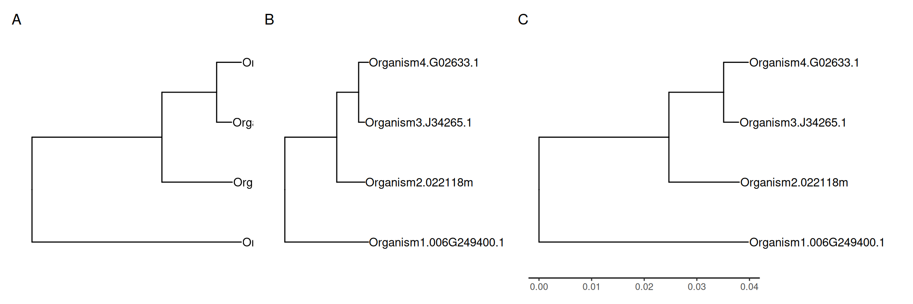
Allocating more spaces for truncated tip labels. Long tip labels may be truncated (A). One solution is to allocate more spaces for plot panel (B), and another solution is to allow plotting labels outside the plot panel (C).
The third solution is to use hexpand() as demonstrated in session 12.4.
For rectangular/dendrogram layout trees, users can display tip labels as y-axis labels. In this case, no matter how long the labels are, they will not be truncated (see Figure ?fig-tiplabC).
Modify (tip) labels
If you want to modify tip labels of the tree, you can use treeio::rename_taxa() to rename a phylo or treedata object.
tree <-read.tree(text ="((A, B), (C, D));")d <-data.frame(label = LETTERS[1:4], label2 =c("sunflower", "tree", "snail", "mushroom"))## rename_taxa use 1st column as key and 2nd column as value by default ## rename_taxa(tree, d)rename_taxa(tree, d, label, label2) %>% write.tree
[1] "((sunflower,tree),(snail,mushroom));"
If the input tree object is a treedata instance, you can use write.beast() to export the tree with associated data to a BEAST compatible NEXUS file (see Chapter 3).
Renaming phylogeny tip labels seems not to be a good idea, since it may introduce problems when mapping the original sequence alignment to the tree. Personally, I recommend storing the new labels as a tip annotation in treedata object.
tree2 <-full_join(tree, d, by ="label")tree2
'treedata' S4 object'.
...@ phylo:
Phylogenetic tree with 4 tips and 3 internal nodes.
Tip labels:
A, B, C, D
Rooted; no branch length.
with the following features available:
'', 'label2'.
# The associated data tibble abstraction: 7 × 4
# The 'node', 'label' and 'isTip' are from the phylo tree.
node label isTip label2
<int> <chr> <lgl> <chr>
1 1 A TRUE sunflower
2 2 B TRUE tree
3 3 C TRUE snail
4 4 D TRUE mushroom
5 5 <NA> FALSE <NA>
6 6 <NA> FALSE <NA>
7 7 <NA> FALSE <NA>
If you just want to show different or additional information when plotting the tree, you don’t need to modify tip labels. This could be easily done via the %<+% operator to attach the modified version of the labels and then use the geom_tiplab() layer to display the modified version (Figure ?fig-renameTip).
p <-ggtree(tree) +xlim(NA, 3)p1 <- p +geom_tiplab()## the following command will produce an identical figure of p2## ggtree(tree2) + geom_tiplab(aes(label = label2))p2 <- p %<+% d +geom_tiplab(aes(label=label2))plot_list(p1, p2, ncol=2, tag_levels ="A")
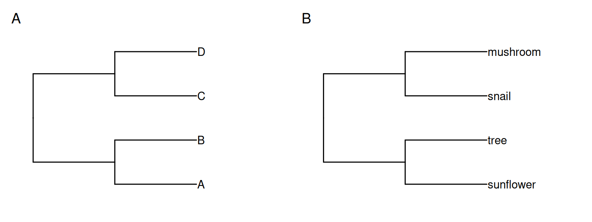
Alternative tip labels. Original tip labels (A) and a modified version (B).
Formatting (tip) labels
If you want to format labels, you need to set parse=TRUE in the geom_text()/geom_tiplab()/geom_nodelab() and the label should be a string that can be parsed into expression and displayed as described in ?plotmath. Users can use the latex2exp package to convert LaTeX math formulas to R’s plotmath expressions, or use the ggtext package to render Markdown or HTML.
For example, the tip labels contain several parts (e.g., genus, species, and geo), we can differentiate these pieces of information with different formats (Figure ?fig-formatTipA).
Warning: Removed 65 rows containing missing values or values outside the scale range
(`geom_label_repel()`).
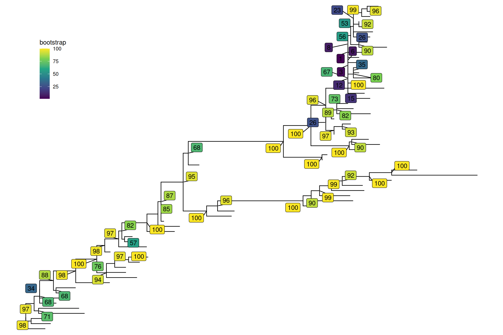
Repel labels. Repel labels to avoid overlapping.
Bootstrap values from Newick format
It is quite common to store bootstrap value as node label in the Newick format as in Figure ?fig-nwkbs. Visualizing node label is easy using geom_text2(aes(subset = !isTip, label=label)).
If you want to only display a subset of bootstrap (e.g., bootstrap > 80), you can’t simply use geom_text2(subset= (label > 80), label=label) (or geom_label2) since label is a character vector, which contains node label (bootstrap value) and tip label (taxa name). geom_text2(subset=(as.numeric(label) > 80), label=label) won’t work either, since NAs were introduced by coercion. We need to convert NAs to logical FALSE. This can be done by the following code:
Warning in FUN(X[[i]], ...): NAs introduced by coercion
Warning in FUN(X[[i]], ...): NAs introduced by coercion
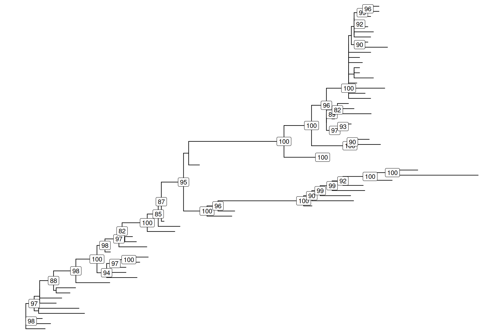
Bootstrap value stored in node label.
As this is a very common issue, we implemented a read.newick() function in the treeio package to allow parsing internal node labels as supported values. As a result, it can be easier to display bootstrap values using the following code:
By default, ggtree() ladderizes the input tree so that the tree will appear less cluttered. This is the reason why the tree visualized by ggtree() is different from the one using plot.phylo() which displays a non-ladderized tree. To disable the ladderize effect, users can pass the parameter ladderize = FALSE to the ggtree() function as demonstrated in Figure ?fig-ggtreeladderize.
library(ape)
Attaching package: 'ape'
The following object is masked from 'package:ggtree':
rotate
The following object is masked from 'package:treeio':
drop.tip
library(ggtree)set.seed(42)x <-rtree(5)plot(x)
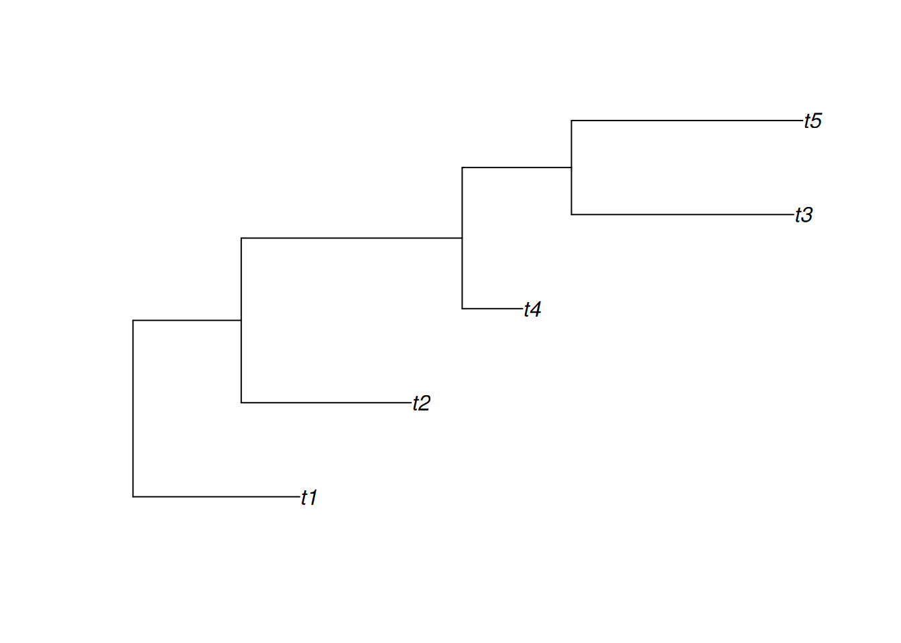
ggtree(x, ladderize =FALSE) +geom_tiplab()
ggtree(x) +geom_tiplab()
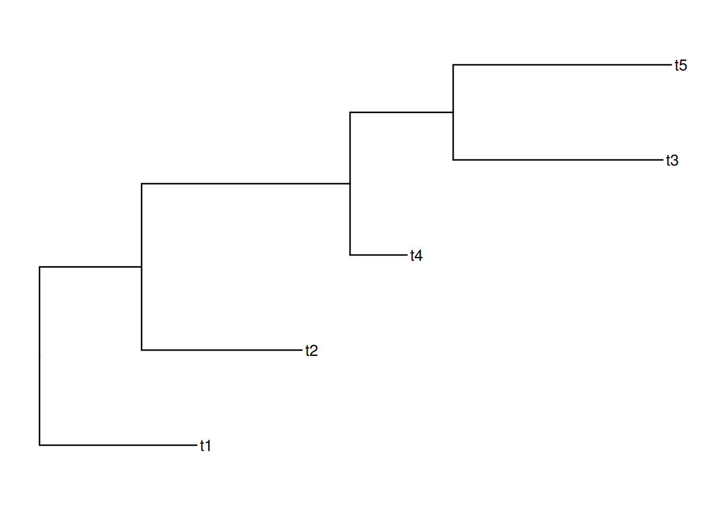
library(ape)library(ggtree)library(ggplotify)set.seed(2020)x <-rtree(5)#p1 <- as.ggplot(~plot(x))#p2 <- ggtree(x, ladderize = FALSE) + geom_tiplab()#p3 <- ggtree(x) + geom_tiplab()## don't know why throw error when combine them in bookdown## it is OK in interactive R terminal# plot_list(p1, p2, p3, ncol=3, tag_levels = 'A')
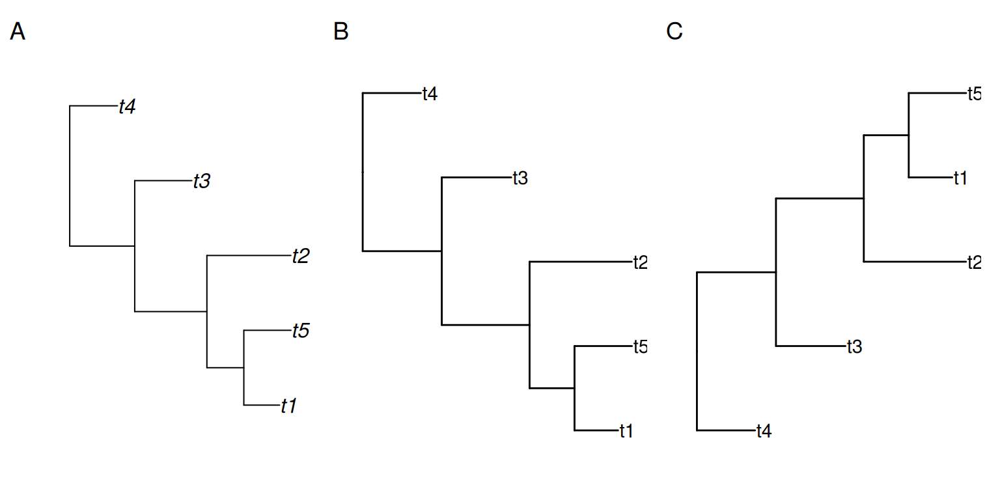
Ladderized and non-ladderized tree.plot.phylo() displays non-ladderized tree (A), use ladderize = FALSE to display non-ladderized tree in ggtree() (B), ggtree() displays ladderized tree by default (C).
Specifying the order of the tips
The rotateConstr() function provided in the ape package rotates internal branches based on the specified order of the tips, and the order should be followed when plotting the tree (from bottom to top). As ggtree() by default ladderizes the input tree, users need to disable by passing ladderize = FALSE. Then the order of the tree will be displayed as expected (Figure ?fig-rotateConstr). Users can also extract tip order displayed by ggtree() using the get_taxa_name() function as demonstrated in session 12.6.
Specifying tree order. The order of the input tree will be maintained in ggtree() when ladderize = FALSE.
Shrink outlier long branch
When outgroups are on a very long branch length (Figure ?fig-outgroupEdgeA), we would like to keep the outgroups in the tree but ignore their branch lengths (Figure ?fig-outgroupEdgeB)5. This can be easily done by modifying the coordinates of the outgroups (Figure ?fig-outgroupEdgeB). Another approach is to truncate the plot using the ggbreak package (Figure ?fig-outgroupEdgeC) (Xu et al., 2021).
ggbreak v0.1.6 Learn more at https://yulab-smu.top/
If you use ggbreak in published research, please cite the following
paper:
S Xu, M Chen, T Feng, L Zhan, L Zhou, G Yu. Use ggbreak to effectively
utilize plotting space to deal with large datasets and outliers.
Frontiers in Genetics. 2021, 12:774846. doi: 10.3389/fgene.2021.774846
Shrink outlier long branch. Original tree (A); reduced outgroup branch length (B); truncated tree plot (C).
Attach a new tip to a tree
Sometimes there are known branches that are not in the tree, but we would like to have them on the tree. Another common scenario is when we have a new sequence species and would like to update the reference tree with this species by inferring its evolutionary position.
Users can use phytools::bind.tip()(Revell, 2012) to attach a new tip to a tree. With tidytree, it is easy to add an annotation to differentiate newly introduced and original branches and to reflect the uncertainty of the added branch splits off, as demonstrated in Figure ?fig-bindTip.
library(phytools)
Loading required package: maps
Attaching package: 'phytools'
The following object is masked from 'package:treeio':
read.newick
library(tidytree)
tidytree v0.4.7 Learn more at https://yulab-smu.top/contribution-tree-data/
Please cite:
Guangchuang Yu. Data Integration, Manipulation and Visualization of
Phylogenetic Trees (1st edition). Chapman and Hall/CRC. 2022,
doi:10.1201/9781003279242, ISBN: 9781032233574
Attaching package: 'tidytree'
The following objects are masked from 'package:ape':
drop.tip, keep.tip
The following object is masked from 'package:treeio':
getNodeNum
The following object is masked from 'package:stats':
filter
Warning: `geom_errorbarh()` was deprecated in ggplot2 4.0.0.
ℹ Please use the `orientation` argument of `geom_errorbar()` instead.
`height` was translated to `width`.
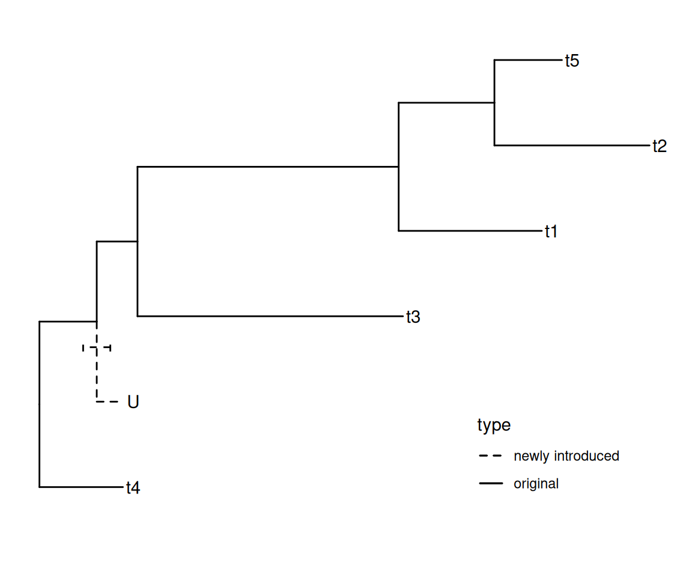
Attaching a new tip to a tree. Different line types were employed to distinguish the newly introduced tip and an error bar was added to indicate the uncertainty of the added branch position.
Change colors or line types of arbitrarily selected branches
If you want to color or change line types of specific branches, you only need to prepare a data frame with variables of branch setting (e.g., selected and unselected). Applying the Method 1 described in (Yu et al., 2018) to map the data onto the tree will make it easy to set colors and line types (Figure ?fig-btype).
set.seed(123)x <-rtree(10)## binary choices of colorsd <-data.frame(node=1:Nnode2(x), colour ='black')d[c(2,3,14,15), 2] <-"red"## multiple choices of line typesd2 <-data.frame(node=1:Nnode2(x), lty =1)d2[c(2,5,13, 14), 2] <-c(2, 3, 2,4)p <-ggtree(x) +geom_label(aes(label=node))p %<+% d %<+% d2 +aes(colour=I(colour), linetype=I(lty))
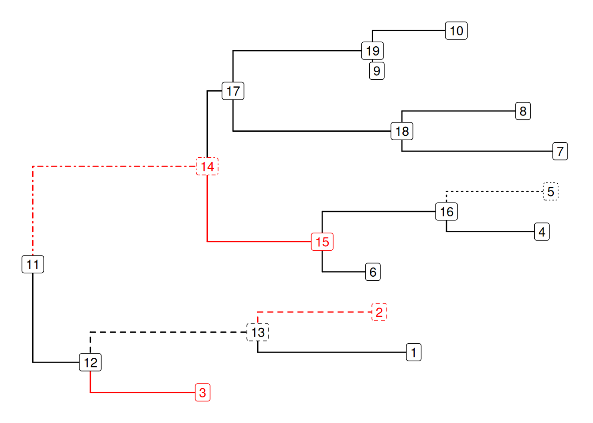
Change colors and line types of specific branches.
Users can use the gginnards package to manipulate plot elements for more complicated scenarios.
Add an arbitrary point to a branch
If you want to add an arbitrary point to a branch6, you can use geom_nodepoint(), geom_tippoint(), or geom_point2() (works for both external and internal nodes) to filter selected node (the endpoint of the branch) via the subset aesthetic mapping and specify horizontal position by x = x - offset aesthetic mapping, where the offset can be an absolute value (Figure ?fig-pointOnBranchA) or in proportion to the branch length (Figure ?fig-pointOnBranchB).
set.seed(2020-05-20)x <-rtree(10)p <-ggtree(x)p1 <- p +geom_nodepoint(aes(subset = node ==13, x = x - .1),size =5, colour ='firebrick', shape =21)p2 <- p +geom_nodepoint(aes(subset = node ==13, x = x - branch.length *0.2),size =3, colour ='firebrick') +geom_nodepoint(aes(subset = node ==13, x = x - branch.length *0.8),size =5, colour ='steelblue')plot_list(p1, p2, ncol=2, tag_levels="A")
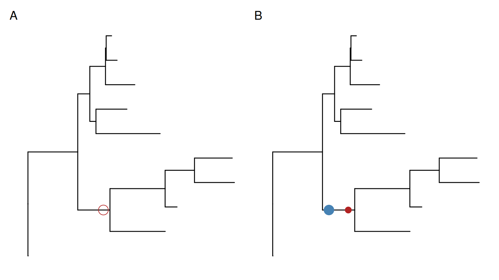
Add an arbitrary point on a branch. The position of the symbolic point can be adjusted by an absolute value (A) or in proportion to the branch length (B).
Different X-axis Labels for Different Facet Panels
This is not supported by ggplot2 in general. However, we can just draw text labels for each panel and put the labels beyond the plot panels as demonstrated in Figure ?fig-xlabFacets.
library(ggtree)library(ggplot2)set.seed(2019-05-02)x <-rtree(30)p <-ggtree(x) +geom_tiplab()d <-data.frame(label = x$tip.label, value =rnorm(30))p2 <- p +geom_facet(panel ="Dot", data = d, geom = geom_point, mapping =aes(x = value)) p2 <- p2 +theme_bw() +xlim_tree(5) +xlim_expand(c(-5, 5), 'Dot') # .panel is the internal variable used in `geom_facet` for faceting.d <-data.frame(.panel =c('Tree', 'Dot'), lab =c("Distance", "Dot Units"), x=c(2.5,0), y=-2)p2 +scale_y_continuous(limits=c(0, 31), expand=c(0,0), oob=function(x, ...) x) +geom_text(aes(label=lab), data=d) +coord_cartesian(clip='off') +theme(plot.margin=margin(6, 6, 40, 6))
Scale for y is already present.
Adding another scale for y, which will replace the existing scale.
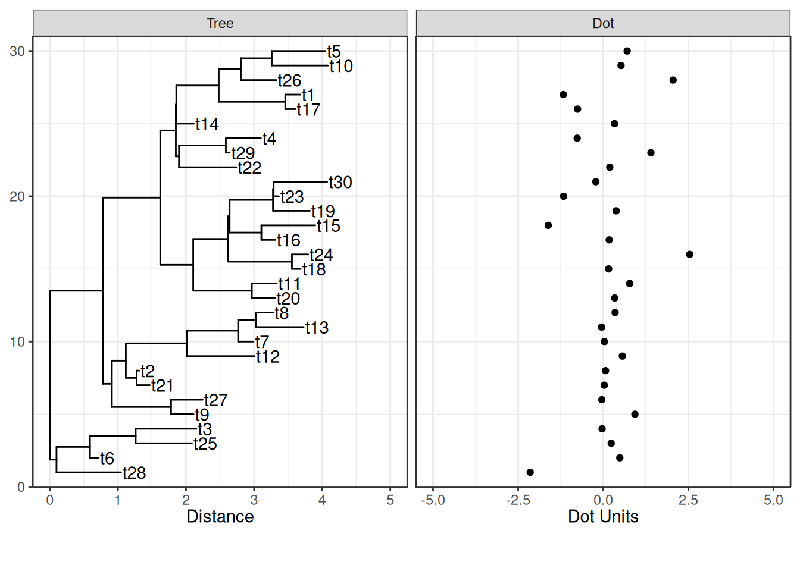
X-axis titles for different facet panels.
Plot Something behind the Phylogeny
The ggtree() function plots the tree structure, and normally we add layers on top of the tree.
If we want the layers behind the tree layer, we can reverse the order of all the layers.
p$layers <-rev(p$layers)
Another solution is to use ggplot() instead of ggtree() and + geom_tree() to add the layer of tree structure at the correct position of the layer stack (Figure ?fig-treeLayerOrder).
Add layers behind the tree structure. A layer on top of the tree structure (A). Reverse layer order of A (B). Add layer behind the tree layer (C).
Enlarge Center Space in Circular/Fan Layout Tree
This question for enlarging center space in circular/fan layout tree was asked several times7, and a published example can be found in (Barton et al., 2016). Increasing the percentage of center white space in a circular tree is useful to avoid overlapping tip labels and to increase the readability of the tree by moving all nodes and branches further out. This can be done simply by using xlim() or hexpand() to allocate more space (Figure ?fig-circular-spaceA), just like in Figure ?fig-layout2G, or assigning a long root branch that is similar to the “Root Length” parameter in FigTree (Figure ?fig-circular-spaceB).
Warning: Unknown or uninitialised column: `subgroup`.
Unknown or uninitialised column: `subgroup`.
Unknown or uninitialised column: `subgroup`.
Unknown or uninitialised column: `subgroup`.
Unknown or uninitialised column: `subgroup`.
Unknown or uninitialised column: `subgroup`.
Unknown or uninitialised column: `subgroup`.
Unknown or uninitialised column: `subgroup`.
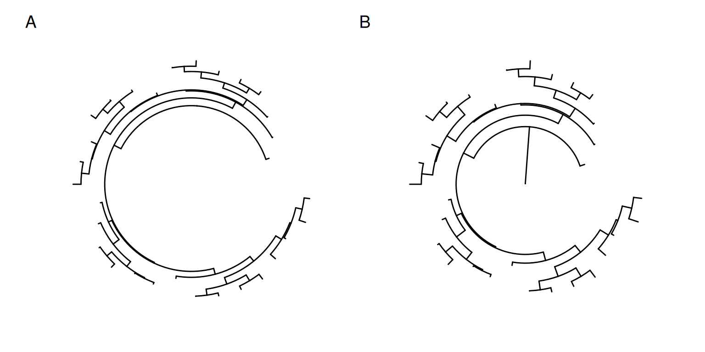
Enlarge center space in circular tree. Allocate more space by xlim (A) or long root branch (B).
Use the Most Distant Tip from the Root as the Origin of the Timescale
The revts() will reverse the x-axis by setting the most recent tip to 0. We can use scale_x_continuous(labels=abs) to label x-axis using absolute values (Figure ?fig-distantTip).
Warning: Using `size` aesthetic for lines was deprecated in ggplot2 3.4.0.
ℹ Please use `linewidth` instead.
ℹ The deprecated feature was likely used in the ggtree package.
Please report the issue at <https://github.com/YuLab-SMU/ggtree/issues>.
f <-tempfile(fileext=".png")ggsave(filename = f, plot = p, width=7, height=7)
Warning: Unknown or uninitialised column: `subgroup`.
Warning: Unknown or uninitialised column: `subgroup`.
Unknown or uninitialised column: `subgroup`.
Unknown or uninitialised column: `subgroup`.
x <-image_read(f, density=300)y <-image_trim(x)panel_border <-theme(panel.border=element_rect(colour='black', fill=NA, size=2))
Warning: The `size` argument of `element_rect()` is deprecated as of ggplot2 3.4.0.
ℹ Please use the `linewidth` argument instead.
xx <-image_ggplot(x) + panel_border
Warning: `aes_string()` was deprecated in ggplot2 3.0.0.
ℹ Please use tidy evaluation idioms with `aes()`.
ℹ See also `vignette("ggplot2-in-packages")` for more information.
ℹ The deprecated feature was likely used in the magick package.
Please report the issue at <https://github.com/ropensci/magick/issues>.
Trim extra white space for polar coordinates. Original plot (A). Trimmed version (B).
Edit Tree Graphic Details
It can be hard to modify plot details for ordinary users using ggplot2/ggtree. We recommend using the eoffice package to export ggtree output to a Microsoft Office Document and edit the tree graphic in PowerPoint.
Barton, K., Hiener, B., Winckelmann, A., Rasmussen, T. A., Shao, W., Byth, K., Lanfear, R., Solomon, A., McMahon, J., Harrington, S., Buzon, M., Lichterfeld, M., Denton, P. W., Olesen, R., Østergaard, L., Tolstrup, M., Lewin, S. R., Søgaard, O. S., & Palmer, S. (2016). Broad activation of latent HIV-1 in vivo. Nature Communications, 7, 12731. https://doi.org/10.1038/ncomms12731
Revell, L. J. (2012). Phytools: An R package for phylogenetic comparative biology (and other things). Methods in Ecology and Evolution, 3(2), 217–223. https://doi.org/10.1111/j.2041-210X.2011.00169.x
Wickham, H. (2016). ggplot2: Elegant graphics for data analysis. Springer. http://ggplot2.org
Xu, S., Chen, M., Feng, T., Li, Z., Lang, Z., & Yu, G. (2021). Use ggbreak to effectively utilize plotting space to deal with large datasets and outliers. Frontiers in Genetics, 12, 774846. https://doi.org/10.3389/fgene.2021.774846
Yu, G., Lam, T. T.-Y., Zhu, H., & Guan, Y. (2018). Two methods for mapping and visualizing associated data on phylogeny using ggtree. Molecular Biology and Evolution, 35(12), 3041–3043. https://doi.org/10.1093/molbev/msy194